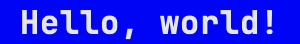
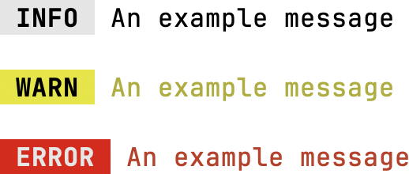
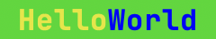

library
NeonSign
NeonSign is a library for creating styled text in terminals. With the modern, declarative syntax it offers, you simply describe the styles a string should have, instead of working with terminal commands directly.
Examples
See Building a styled string with NeonSign to learn how to build styled strings like these:
 |
 |
 |
Getting started
Building a styled string with NeonSign
Styling a string
|
Converts a string to a styled string object or creates a group of strings that can be styled together. |
A string associated with display styles. |
|
|
A class that provides access to color instances. |